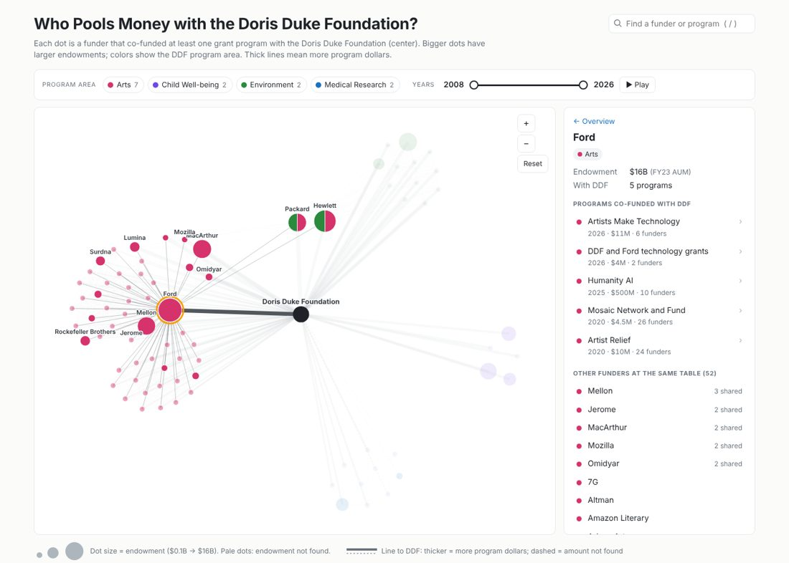
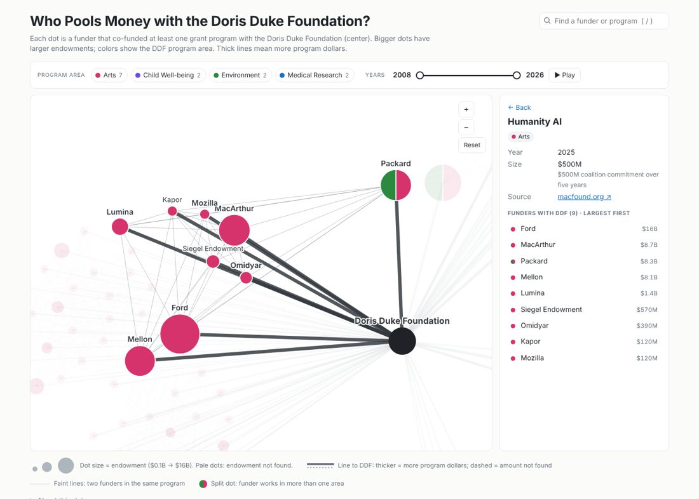
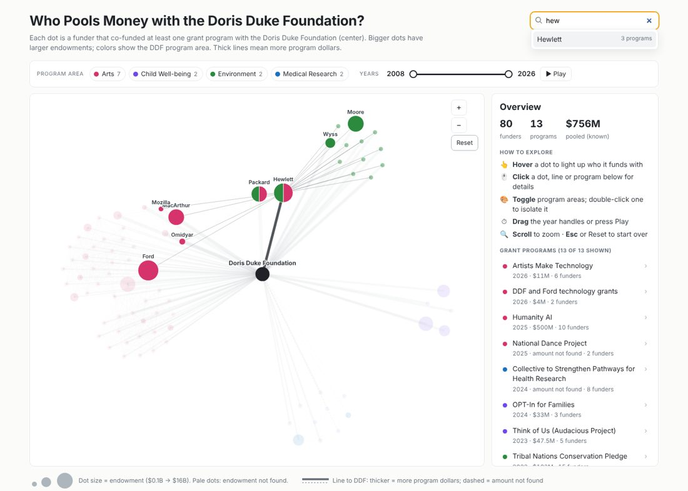

How Claude built this
A record of the prompts, design decisions and checks behind the DDF Funders Network, built for a data visualization class assignment by Alexa Kalach Luft with Claude (Anthropic).
AI statement
Software tools. Claude (Opus 5.5) in the Claude app, running Claude Code's agent tools: a shell and file editor to write the code, a built-in browser to study the reference visualization, web search to check the data, and headless Chrome (Playwright) to test the page. The page itself is plain HTML, CSS and JavaScript with D3.js v7 for the force-directed layout, hosted on GitHub Pages.
Key prompts. The opening prompt asked Claude to recreate the reference network and make it "as intuitive and easy to use as possible." Follow-up prompts targeted specific usability problems. They are listed in order below.
Verifying accuracy and usability. (1) The data was checked in code: 13 programs, 80 funders and $755.7M in known program dollars, the same totals as the reference, with no duplicate funders and no orphan endowment entries. (2) Program amounts and funder lists for Humanity AI, the Tribal Nations Conservation Pledge and OPT-In for Families were spot-checked against the foundations' own press releases and news coverage. (3) A scripted browser test hovered, clicked, searched, filtered and played the timeline on desktop and a phone-sized screen, checked for JavaScript errors and saved screenshots. Claude reviewed each screenshot for clutter, empty space and confusing states, then fixed what it found (see the iteration log).
Prompts
I opened the reference in a browser and read its 49-prompt build log. I reused its dataset of 13 pooled-fund programs (with source links) and rebuilt the interface from scratch around one question: what would a first-time visitor need in order to understand this without instructions?
- Plain-language title and one-sentence key under it ("Each dot is a funder… bigger dots… thick lines…"), so the encoding is explained before anyone has to hunt for a legend.
- Clusters by program area. Funders are pulled toward their area's region, and funders active in two areas sit between them with split-color dots.
- A side panel that is never empty. On load it shows the overview: totals, a five-line "How to explore" guide, and clickable lists of all programs and repeat partners. People who never discover that dots are clickable can still reach every detail from the list.
- Hover to preview, click to commit. Hovering a dot, a line or a list row lights up the related funders without losing your current view. Clicking opens details, and a Back link retraces your steps.
- Search with autocomplete (press
/). It previews the top match on the graph as you type. - Filters that explain themselves. The area chips double as the color legend and show live program counts. A two-handle year slider and a Play button animate the network's growth, with the year shown large in the corner.
- Escape hatches: Reset, Esc and clicking empty space all return to the overview. If the filters hide everything, a message says how to recover.
- An onboarding hint pill that disappears after the first click or after nine seconds.
Iteration log — usability problems found in testing and fixed
After each build, a headless browser clicked through the page and Claude reviewed the screenshots. Each row is something a user would have stumbled on.
| Problem seen | Fix |
|---|---|
| The network filled only about 60% of the canvas, with dense, overlapping clusters. | Spread out the cluster centers, added more repulsion and spacing, and fit the drawing to the canvas. |
| Selecting Ford lit up 52 partners and buried the graph in overlapping labels. | When more than 16 funders are highlighted, label only the key ones (large endowment or several programs). Zoom in to see the rest. |
| The search box wrapped onto its own row and pushed the graph down. | Moved search into the title row and added a / keyboard shortcut. |
| Zooming into a program made lines absurdly thick. | Line widths now stay constant on screen at any zoom (vector-effect: non-scaling-stroke), and label size compensates for zoom. |
| In a program view, line widths showed each funder's total across all programs, which was misleading. | In a program view, each line shows that program's own size. |
| Filtering to a single area left a small cluster stranded in one corner. | Area filters now zoom to whatever is still visible. |
| Phones have no hover, but the hints said "Hover" and "Scroll." | On touch screens the text says "Tap" and "Pinch," and the panel stacks under the graph. |
| Filtering could hide the funder you were viewing, leaving a stale panel. | The panel falls back to the overview. Clicking a hidden program in a list turns its filter back on. |



How it was checked
| Check | Result |
|---|---|
| Data totals vs. the reference | 13 programs · 80 funders · $755.7M known: match |
| Humanity AI ($500M, 10 foundations) | Confirmed by the MacArthur, Mellon and Omidyar announcements |
| Tribal Nations Conservation Pledge ($102.5M, 15 funders, DDF ≈ $32M) | Confirmed by DDF's March 2023 press release |
| OPT-In for Families ($33M; DDF, Duke Endowment, Aviv) | Confirmed by DDF and Inside Philanthropy |
| Scripted interaction test (hover, click, back, search, filter, play, reset) | All passed, no console errors |
| Phone layout (390 px wide) | Controls wrap, and the panel stacks below the graph |
Limits: endowments are not all from the same year (see each funder's note), and two programs have no public amount. Those lines are dashed and are not counted in the dollar totals.